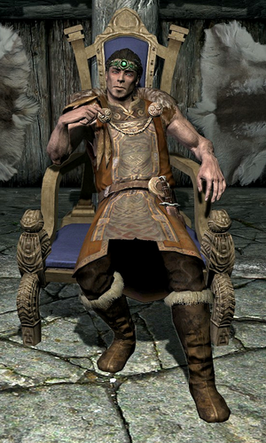
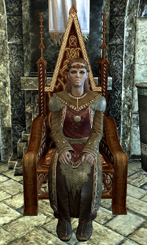
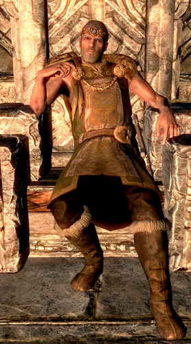
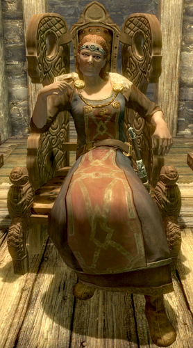
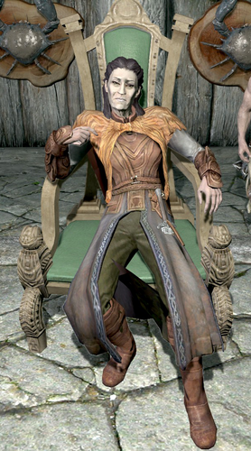
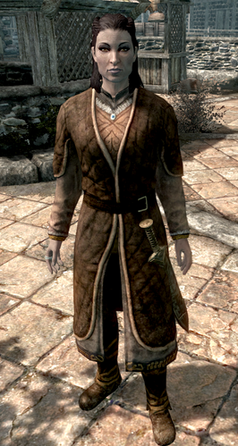

| Jarl |
Bando |
Comarca |
Capital |
Residencia |
Foto |
| Jarl Balgruff |
Imperiales |
Carrera Blnaca |
Carrera Blanca |
Cuanca del Dragon |
 |
| Jarl Escaldo |
Capas de la tormenta |
El palido |
Lucero del Alba |
El Salon del Blanco |
 |
| Jarl Siddgeir |
Imperiales |
Falkreat |
Falkreat |
Casa Comun del Jarl |
 |
| Jarl Elisif |
Imperiales |
Haafingar |
Soledad |
Palacio Azul |
 |
| Jarl Korir |
Capas de la Tormenta |
Hibernalia |
Hibernalia |
Casa Comunal del Jarl |
 |
| Jarl Igmund |
Imperiales |
La Cuenca |
Markath |
La Cuenca |
 |
| Jarl Laila |
Capas de la Tormenta |
La grieta |
Riften |
Bastion del Velo |
 |
| Jarl Idgrod |
Imperiales |
Marca de Hjaal |
Mhortal |
Salon de Luna Alta |
 |
| Jarl Ulfric |
Capas de la Tormenta |
Marca Oriental |
Ventalia |
Palacio de los Reyes |
 |
| Jarl Maven |
Imperiales |
La grieta |
Riften |
Bastion del Velo Brumoso |
 |
| Jarl Sorli |
Capas de la tormenta |
Marca de Hjaal |
Mortal |
Salon de la Luna |
 |
| Jarl Kraldar |
Imperiales |
Hibernalia |
Hibernalia |
Colegio de Magos |
 |